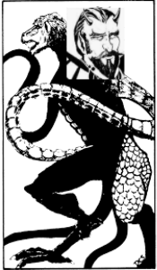

Everyday Systems: Podcast : Episode 52
Demogorgon vs. Asmodeus
I have noticed that whenever I try to tackle some problem behavior or habit of mind I wind up having to wrestle with not one but two seemingly opposite problems:
First, there is the behavior itself, the thing I’m trying to correct. Usually something I want to do that I know isn’t good. Usually some appetite I’m struggling not to indulge. For example, though I personally don’t have a problem with this anymore (thanks to the No S Diet) overeating.
Second, there is the self-reproach or even self-loathing that this behavior prompts. This is often a worse problem than the original problem. The canonical example: what is worse, being fat, or hating yourself for being fat? Or to keep it on the level of actions, overeating or hating yourself for overeating?
The tricky part is that it’s hard to keep both of these problems in mind at the same time, to see them both as legitimate problems that both need to be worked on. We prefer to simplify, to pick one. That’s easier. It makes more immediate emotional sense. We tend to only feel one at a time. The problem is that this attitude doesn’t correspond to reality. It’s incomplete. And we know this, even if we can’t accept it. And so we wind up swinging from one extreme to the other: One day we are outraged by our weight, the next day we are outraged by our outrage at our weight, by our own internalized fat shaming. And the whole time we have this vague sense that something is wrong, not just with what we are doing or thinking at the moment, but with our judgement of what we are doing or thinking.
It makes me think of those old cartoons where there’s a devil on one shoulder encouraging someone to go ahead and do that bad thing he wants to do, and an angel on the other shoulder trying to dissuade him. Except instead of an angel and a devil, we’ve got two devils, whispering equal but opposite bad things. Or in the personal mythology I’ve come up with to help me catch myself when I’m in situations like these, a devil and a demon.
Apparently there’s a grand theological term for this image of the conflict between shoulder angel and shoulder devil, and it goes back way further than Tom and Jerry et. al. : the ancients called it the psychomachia, the battle of the soul. I love that there’s this deep philosophical easter egg hidden in Tom and Jerry. And for all these years all I thought I got out of their adorable slapstick violence was a deep appreciation of classical music.
My version of the psychomachia is inspired by Dungeons and Dragons, which I spent way too much time thinking about in my youth. I imagine the force encouraging me to give into my appetites as Demogorgon, the Chaotic Evil Demon Lord, and the force that ruthlessly punishes me for giving into or even having these appetites as Asmodeus, Prince of the 9th layer of Hell. So a Chaotic Evil demon on one shoulder, and a Lawful Evil devil on the other.
Now I’ve just thrown some technical jargon at you: Chaotic Evil and Lawful evil. These are dungeons and dragons alignments. If you’re not familiar with how this system works, or maybe used to be, but it’s been a while, it goes like this:
There’s a grid. A literal moral compass with good vs. evil on the vertical axis, and law vs. chaos on the horizontal. Your alignment is the intersection of these two axes. So you can be Chaotic Evil, or Neutral Good, or Lawful good, or, if you were smack in the middle, True neutral (for some reason they didn’t call it Neutral Neutral). Do a search for “dungeons and dragons alignments” on google images. You’ll find all kinds of 9 by 9 grids with all your favorite Harry Potter characters, politicians, and celebrities organized by their ethical attitude. Staring at a few of these should give you a reasonable sense of the system -- and it’s occasional absurdities.
After decades of lying fallow in the back of my mind, it occurred to me that this alignment system, or part of it, might be a useful way of thinking about my own soul, or at least, the bad parts of my soul, which, I’m afraid, is where all the action seems to be these days. Because, as I mentioned, I find I’m usually not agonizing about whether to do a good thing or a bad thing, but one bad thing or another: specifically, whether to inordinately indulge an appetite -- eat too much, drink too much, covet in various ways too much, stare at a glowing screen too much -- or whether to ruthlessly punish myself for even having such inclinations. And these two evil impulses are in tension. The evil impulse to stick your hand in the cookie jar vs. the evil impulse to hack it off for even wanting to go there. It’s not a contest between good and evil but between two kinds of evil: the destructive appetites on the one side (Chaotic Evil) and the cruel, self-flagellating taskmaster on the other (Lawful Evil).
Demogorgon has enjoyed a resurgence of attention these days because of his evocation in the Netflix series Stranger Things. I have to admit that, though I enjoyed the series tremendously, and not least all the D&D references, most of which were spot on, I was embarrassed to learn that I’d been pronouncing Demogorgon’s name wrong. I’d been saying it demo-GORE-gone instead of dem-gore-gun. I immediately realized how much better Demogorgon sounded, and couldn’t fathom what had caused me to pass over this clearly superior pronunciation.
Pronunciation aside, my Demogorgon is very much the version from the original 1970s, first edition Monster Manual. He’s got two baboon heads, goat hooves, and tentacles like giant dog penises. He is the most powerful demon lord in the 666 layers of the Abyss. The Monster Manual focuses on all the nasty things he would do to a player character if they met him in person rather than his preferred species of moral evil, but he is the most powerful Chaotic Evil being in the game, and in my metaphysics he represents the destructive appetites. He is the master of at least four of the seven deadly sins: lust, gluttony, avarice, sloth. And he is the Lord of Excuses when it comes to indulging them. He’s always whispering some technicality into my ear that would let me allow me to route around a resolution I’ve made and satisfy an illicit desire. “That doesn’t really count as a snack, a drink” etc. Anything to get his tentacles into some cookie jar. I suppose that except for the MPAA rating of some of his suggestions, he’s really not all that different from his left-shoulder cartoon counterpart.
Sometimes I think Demogorgon has a point, that I should just lighten up and indulge my appetites, that it is puritanical and repressive of me not to. Other times I think, no, that’s naive, that’s the mistake our whole “just do it” society is making, Demogorgon is all about making us fail the marshmallow test. Perhaps people don’t believe in sin anymore, but everyone believes in the marshmallow test. Success in the world is all about resisting little proximate rewards for the sake of greater ones in the future (with little breaks for living in the moment, “self care,” just enough so we can regain sufficient strength to fix our eyes steadily on the future again). Snarkiness aside, I see that self-indulgent behavior really can be destructive, and not just to myself, but to the people I love.
Lawful evil Asmodeus, on the other shoulder, is the arch devil who rules the 9th and deepest level of hell, the most powerful lawful evil being in the Monster Manual.
I used to pronounce his name differently as well: "AS-mo-dee-us." But since it was revealed to me that I’d been pronouncing Demogorgon wrong all those years, I figured I must be doing the same with Asmodeus. And "As-mo-DAY-us" sounds better, doesn’t it? More badass. With the deus, Latin for god, emphasized. This is a twisted deus, a twisted god.
He is described as having the bodily form of a fiendishly handsome person (albeit with red eyes, and devil horns and a sinister goatee) and these good looks make sense in my metaphysics since he’s usually seeming to appeal to something good, a kind of justice -- a ruthless, inhuman kind of justice, but justice nonetheless. He remorselessly berates me for giving in to Demogorgon’s demonic urges, or for wanting to, or for thinking of wanting to, or -- well, he always seems to find a pretext for self-punishment. He is the evil “asshole voice” in my head, as Dan Harris, author of 10% Happier, a surprisingly funny book on meditation, refers to his running internal monologue.
Asmodeus is really quite brilliant in his ability to always find something to criticize, and his arguments against any objections I might come up with or efforts to get off the hook are irresistible. He is easily the smartest, most ingenious part of me. And as much as he might convince me to hate myself, I’m always impressed with him. Asmodeus always has the last word. I can never talk him out of his verdict. Whatever I come up with, any come-back, any argument, as deep as my mind can go, he goes one level deeper, and blows me to the moon. Demogorgon, honestly, is a dummy compared to this guy.
Just as I sometimes think Demogorgon is right, I often think Asmodeus is right. Asmodeus talks the language of justice, after all. He condemns evil. He condemns the evil he sees in me. And he’s often, maybe even always, got something legitimate to work with.
And as I mentioned, he talks very convincingly. If it weren’t for the fact that the obvious end goal of all his arguments is to utterly destroy me, that he busts out the scourge and the cat o' nine tails way earlier and more enthusiastically than a benevolent cherub might, I could see him as a divine, rather than diabolical, being -- a righteous avenging angel. And if he wants to damn me, does that disqualify him as an angel? Because what if I deserve his damnation? (That’s his claim, after all). He would be an angel then, straight up. The cartoons got it right, if that’s the case -- and I only see this angel as a devil because of Demogorgon’s smear campaign.
The only problem with this angle, the vindication of Asmodeus, is what he does to me. Not in terms of perhaps deserved pain. Right? Because I might deserve that. But in terms of my capacity to be a functional and decent human being. He really destroys me. When this “angel” is through with me, I’m no good for anything or anyone. I’m barely human. Demihuman, is another evocative D&D term that comes to mind for this condition.
So: Demogorgon is all about getting me off the hook, Asmodeus is all about getting me on the hook, even when I really shouldn’t be, and twisting that hook around gratuitously in the wound to torture me. Demogorgon sometimes succeeds. And it can be bad when he does. But Asmodeus always gets me in the end.
These are the guys on my shoulders.
They fight, of course, and I think I really believed they were simply in opposition for many years. But now it seems to me like their fights just make them both stronger, that they’re actually feeding off each other. They probably need to feed off each other to reach any great magnitude or refinement. Asmodeus needs some Demogorgon to even get started, something to punish, and where’s the delight in transgression if there isn’t anyone to get outraged and apoplectic about it? Demogoron would have nothing to rebel against if it weren’t for Asmodeus’s stern repression. And Asmodeus would have little to condemn if it weren’t for Demogorgon’s predilections.
I think, when I am punishing my appetitive self, that I am doing something good, but I’m not, I’m just indulging a different, maybe even worse kind of evil, and in the end, only making even that other evil I’m punishing stronger, when it vengefully returns after licking its wounds.
In the Monster Manual, Demogorgon has the slight edge (by 1 hit point!). But in my soul, Asmodeus is usually on top.
I’ve even had periods in my life when Asmodeus seems to have won, when Demogorgon has retreated or been exorcised or in any case stopped pestering me with his desires. For months at a time. You’d think, great, peace at least! But those were the worst times. Asmodeus seems to be able to function quite sufficiently in such an environment, though his personality changes a bit. He doesn’t have to talk as much as before, since there are no challenges to his influence. Maybe the absence of desires or hope or even preferences is punishment enough, even by his ruthless standards. Then he’s less a voice, and more of an awful, mute, physical feeling. I don’t need any more evidence that I’m wrong and bad, it’s a given, there isn’t much to say.
The presence that I feel then may not even be Asmodeus. Maybe Asmodeus really can’t function without his foil Demogorgon and also goes away to make way for a new tormenter. Or maybe he transforms into this other thing. Either way, I call this thing, be it a new incarnation of Asmodeus or distinct entity, I don’t know, “The Beast.” The Beast doesn’t need to talk much. At this point, I’ve internalized Asmodeus’s arguments sufficiently that they’ve almost become a physical part of me. The Beast just needs to breathe, to let me feel its breath, to remind me that it is near, that I am still me, that I will always still be me.
You could of course map these to Freudian terms: Demogorgon is the appetitive id vs. Asmodeus the repressive superego. But for aesthetic and motivational reasons I prefer the imagery of E. Gary Gygax. It’s striking. It’s personal. It reminds me that both of these contending forces in my psyche are in fact bad when they are trying to convince me otherwise. And it makes them sort of ridiculous, which I’m hoping might be a mechanism for me to gain some sort of comic detachment and rise above their psychomachia.
And besides, everyone knows Freud has been debunked by neuroscience, whereas the Monster Manual, well, that’s a work of eternal spiritual validity.
When it comes down do it: It’s easier for me to catch myself thinking in one (or both!) of these bad, ridiculous ways using this imagery, than if I had the the more colorless Freudian equivalents in mind.
“Aha! Demogorgon!” I see you again, with your baboon heads and penis tentacles, concocting an excuse! It’s you that want me to drink that third glass of wine when I know I am going to regret it?
Or “Aha! Asmodeus. There you are with you B-movie goatee and horns, catastrophizing again. Making me chop off my tentacle hand for a cookie. ”
I find I can often catch them quite quickly, quite often, with these images in mind. And when I catch them, it really does, at least, sometimes, stop them in their tracks, or at least, slows them down a bit. It’s a little like that labeling thoughts in meditation that you’re supposed to do. Except not quite as neutral. But with a bit more humor. Funny, affectionately judgemental, mindfulness, if there can legitimately be such a thing.
Can this possible be a useful or interesting idea for any other human being beside me? I don’t know.
But it’s been sitting with me for a while, this idea, these two guys on my shoulders, and I’m grateful for the opportunity to give them a little airing. If you’ve made it this far, thanks for listening. May your psychomachia involve Bahamut and the high elves instead of these malevolent metaphysical bastards, or, perhaps even better, if you can swing it (I’m not that advanced) may the zen detachment of the true neutral druids be upon you.
© 2002-2022 Everyday Systems LLC, All Rights Reserved.